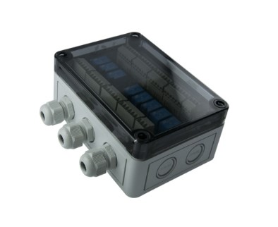
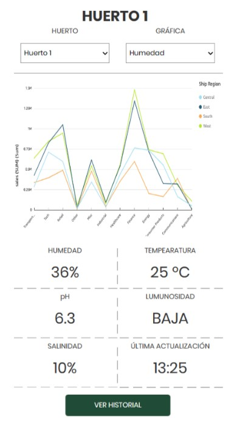

Nuestro Producto
Nuestro sistema de monitorización almacena los sensores necesarios en una caja de alta resistencia ante todas las condiciones medioambientales.
Sensor de Luminosidad

Un sensor de luz es un dispositivo con la capacidad de detectar la cantidad de luz presente en su entorno. Cuando la luz contacta con el sensor, genera una pequeña corriente eléctrica. Cuanta más luz haya, mayor será la corriente generada
Sensor de Humedad

El sensor de humedad se utiliza para medir la cantidad de humedad o vapor de agua presente en el aire o en un objeto. Los cambios en las medidas se convierten en corrientes que podemos usar para controlar y monitorizar la humedad de diversos entornos.
Sensor de Temperatura

Un sensor de temperatura es un dispositivo para medir la temperatura de su entorno. Se generan corrientes electricas con los cambios de temperatura que se utilizan para monitorizar.
Sensor de pH

Un sensor de pH es un dispositivo utilizado para medir la acidez de un sustancia líquida. Detecta los cambios de en el nivel y lo convierte en una lectura, lo cual nos permite controlar el pH en diferentes entornos.
Sensor de Salinidad

El sensor de salinidad es un dispositivo utilizado para medir medir la cantidad de sal disuelta en un líquido. Permitiendo detectar el valor de salinidad basado en las corrientes que genera según cambia.
Nuestra Página
Con nuestra web tienes acceso a todos los datos de los sensores en tu huerto, para que el control y monitorización de este sea lo más práctico posible.
Además podrás controlar varios huertos desde una misma web alternando fácilmente entre gráficas.
Tus datos
Contamos con un sistema de almacenación de datos, donde todos los datos de tus sensores permanecerán almacenados de manera permanente y podrás tener acceso a ellos en cualquier momento.